Explore Toulouse
A Brief History
Toulouse prospered as capital of Occitania and a centre of pastel dye and aerospace industry on the Garonne River. Romanesque basilicas such as Saint-Sernin, brick Renaissance hôtels, and the Capitole square reflect medieval pilgrimage routes and regional parliament traditions. Airbus assembly plants and universities continue a history of trade, Catholic scholarship, and technical innovation in southwestern France.
Attractions Map
Top Sights & Activities
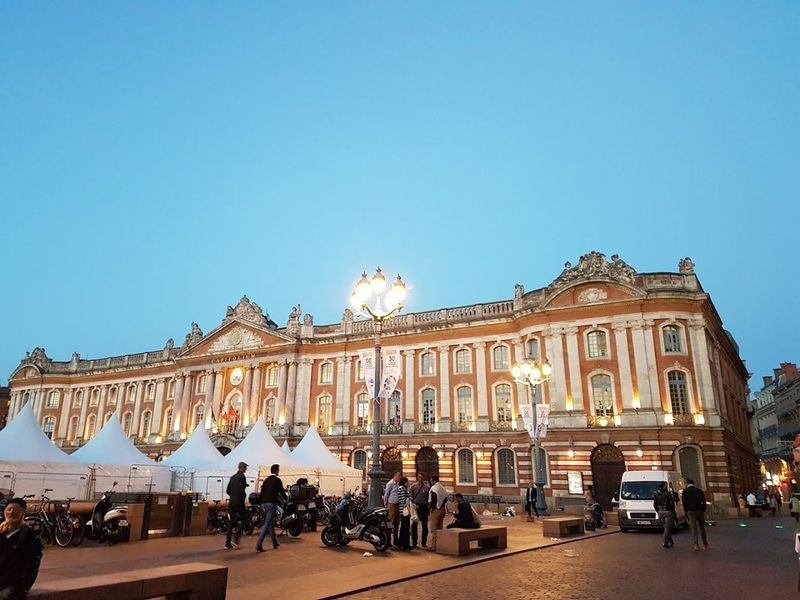
Place du Capitole
Place du Capitole is a must-visit attraction in Toulouse, featuring a majestic neoclassical palace that houses lavish ceremonial rooms adorned with frescoes. The square dates back to the 1100s and is located right in front of the city hall. Visitors can relax at charming cafes while admiring the beauty of Toulouse's Capitole or explore the palace to see historical paintings and artworks.
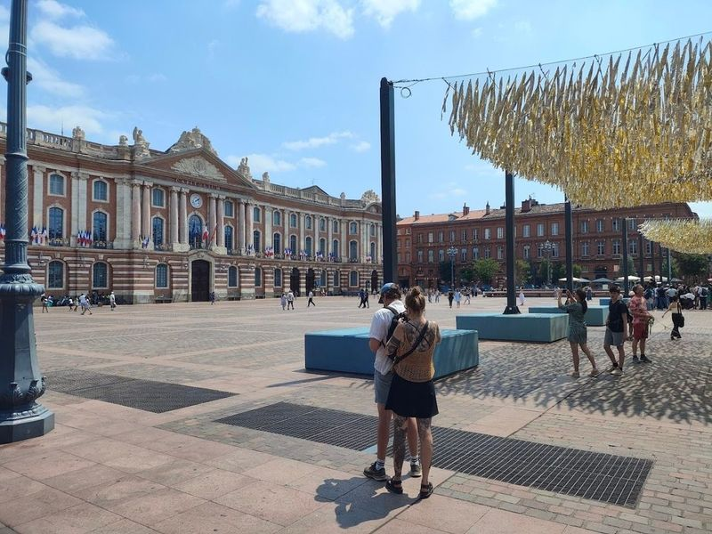
Opéra National du Capitole
Toulouse is a city with a rich musical heritage, offering a diverse range of music experiences. The Théâtre du Capitole stands as an landmark in the city, housing both the town hall and the opera house behind its pink neoclassical facade. The venue hosts classical music performances and operas, making it a must-visit for music enthusiasts.
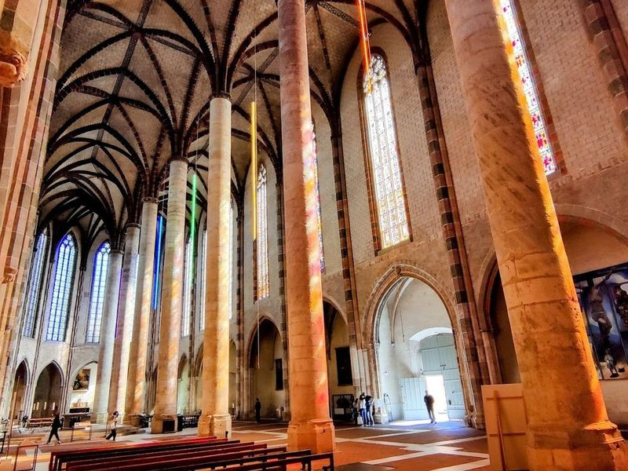
Couvent des Jacobins
The Couvent des Jacobins is a remarkable Dominican edifice in Toulouse, known for its Gothic architecture and as the final resting place of Saint Thomas Aquinas. The Eglise des Jacobins boasts ornate stained-glass windows, while the Cloitre des Jacobins features graceful russet-brick columns surrounding a green courtyard.
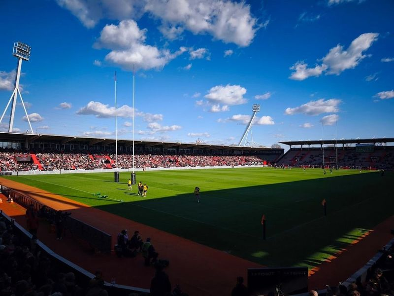
Stade Ernest-Wallon
Stade Toulousain, based in Toulouse, is a prominent rugby union team with a rich history of success. The club has contributed numerous players to the French national team and holds the record for the most Heineken Cup trophies. Additionally, they have secured 19 French Championships, making them a dominant force in domestic competitions. Visitors can catch an exhilarating game at Stade Ernest-Wallon between August and May.
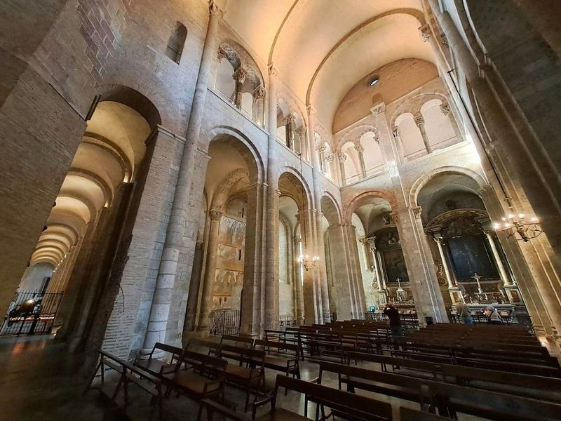
Basilique Saint-Sernin de Toulouse
Basilique Saint-Sernin de Toulouse, a medieval basilica located in Toulouse, France, is renowned for housing relics of 128 saints and a thorn believed to be from the Crown of Thorns. This UNESCO-listed site is Romanesque churches in Europe. The church's crypt contains an extensive collection of relics donated by Charlemagne to the abbey on this site in the 800s.
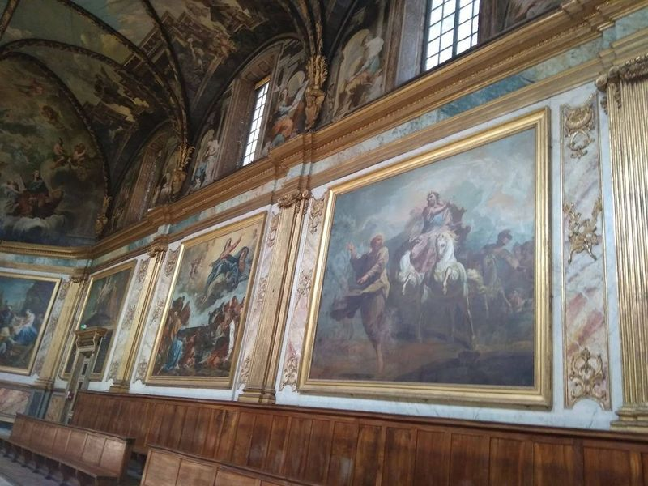
Chapelle des Carmélites
The Chapelle des Carmélites in Toulouse is a single-room chapel constructed in 1622, and it's the only remaining part of a larger Carmelite convent. The vaulted ceiling with oak paneling, hanging keystones, and murals inspired by the Sistine Chapel paintings make this baroque structure a gem reminiscent of its famous counterpart. Located on Rue du Perigord, this small chapel is often compared to the Sistine Chapel for its sublime painted ceilings.
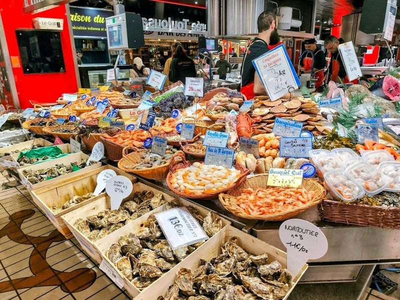
Victor Hugo Market
The Victor Hugo Market is a historic covered market that stands out among Toulouse's many culinary gems. With 88 vibrant stalls, it offers an impressive selection of premium fish, meats, cheeses, and other gourmet delights. Notable vendors include Maison Garcia for exquisite sausages and foie gras, Chez Betty for artisanal cheeses, and Busquets for decadent chocolates.
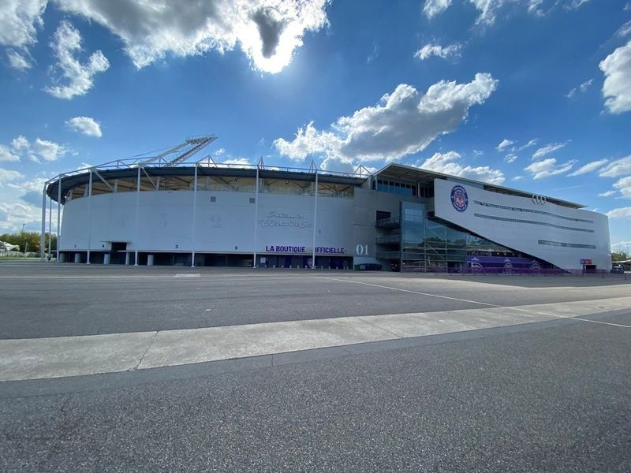
Stadium de Toulouse
Stadium TFC, located in Toulouse, is a versatile venue primarily used for soccer and rugby matches, including those of the local team, Toulouse Football Club. Visitors can easily access the stadium and purchase tickets online or at the venue. The atmosphere is family-friendly with supportive crowds. While some visitors had issues with seating arrangements, others praised the helpful stewards and welcoming fans.
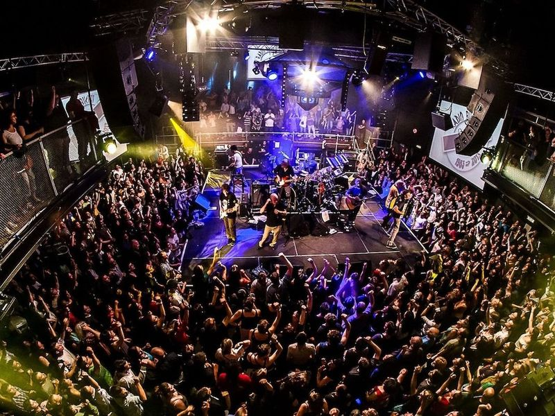
Le Bikini
Le Bikini is a renowned club in Toulouse, known for hosting international headliners and various themed events. Originally located by the Garonne, it was relocated to the Ramonville's event hall after being damaged in the tragic explosion of the AZF factory in 2001. Since 1983, this concert venue has been a hotspot for music enthusiasts, offering over 200 concerts annually covering diverse musical genres.
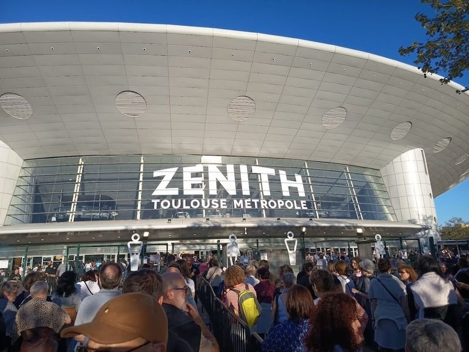
Zénith Toulouse Métropole
Zénith Toulouse Métropole is a versatile venue that hosts a wide range of events including variety shows, rock concerts, dance performances, circus acts, musicals, ice shows, sports events like tennis and horse riding competitions. The stage can be adjusted to accommodate various setups for up to 6000 spectators. With fixed seating for 5000 people and additional removable stands, it offers a capacity of around 11000 attendees.
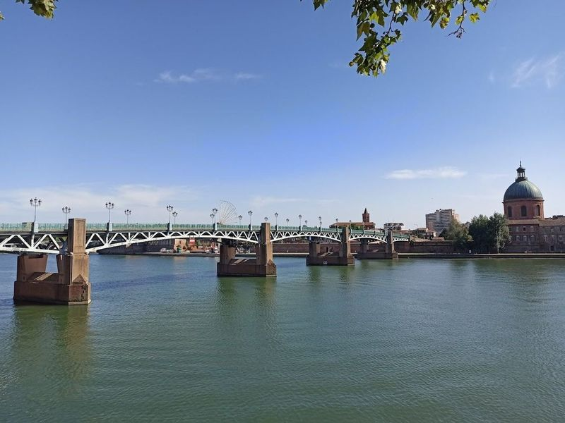
Pont Neuf
Pont Neuf is a historic stone road bridge in Toulouse, completed in 1632, spanning the Garonne river with its seven arches and stretching 722 feet. It's a popular spot for wedding photos due to its romantic setting with the Garonne flowing beneath and the historical architecture providing a picturesque backdrop. The bridge took nearly 90 years to complete, replacing two older bridges that linked the banks of the river.
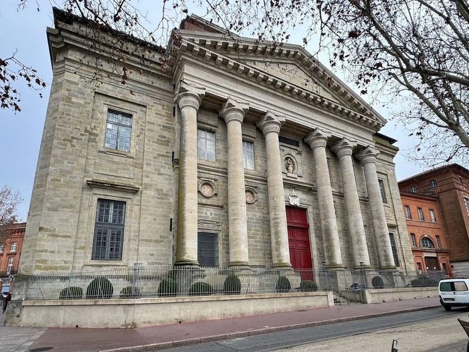
Basilique Notre-Dame de la Daurade
The Basilica of Our Lady of the Daurade, located in Toulouse, has a rich history dating back to a Roman temple. It is home to an 1807 replica of the 15th-century Black Madonna. Situated by the Garonne River, it offers a serene atmosphere and houses the Black Madonna adorned in exquisite garments designed by renowned fashion designers.
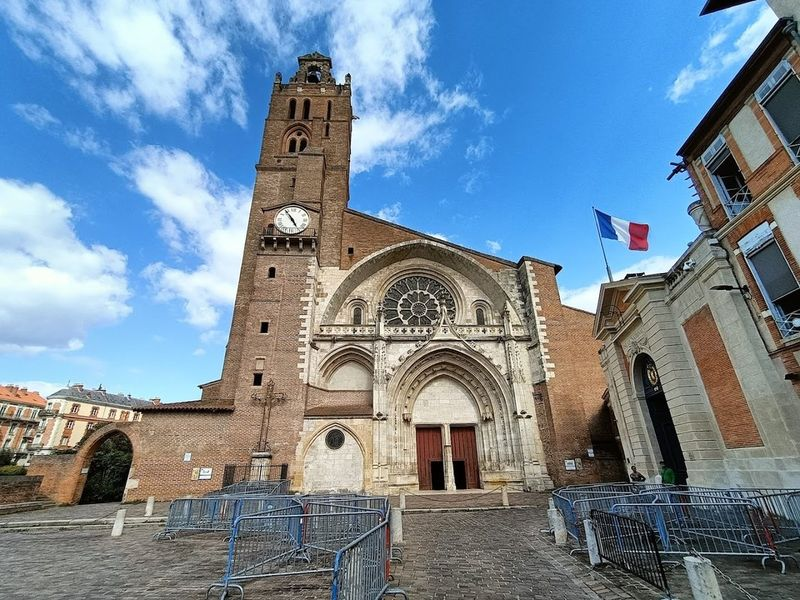
Saint-Etienne Cathedral
Saint Stephen's Cathedral, also known as Saint-Etienne Cathedral, is a medieval masterpiece located in Toulouse. This architectural wonder is a combination of Roman and Gothic styles, with elements of Baroque and Romanesque architecture. The cathedral's construction spanned over five centuries, resulting in a unique blend of diverse architectural influences that some find perplexing yet captivating.
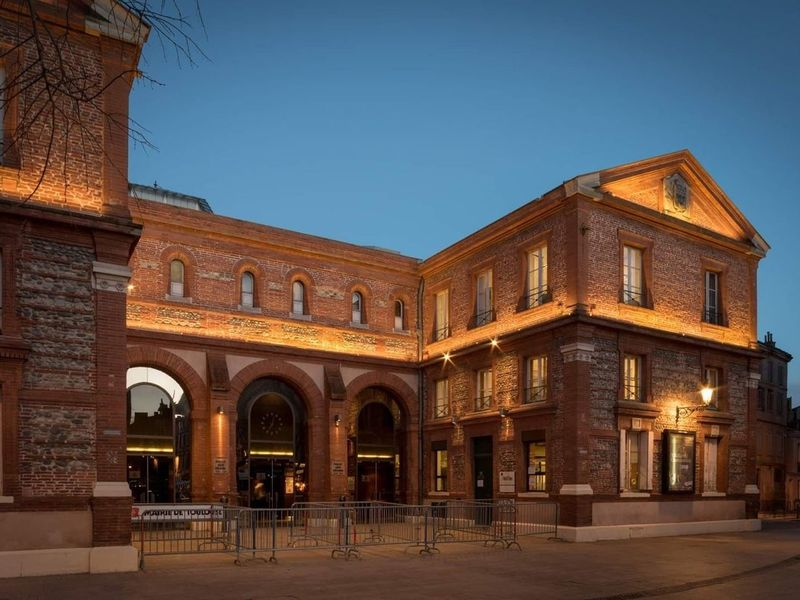
La Halle aux Grains
La Halle aux Grains is a historic concert venue located in Toulouse, France. Originally built in 1861 as a covered market for trading cereals, it was later transformed into a sports stadium before becoming the home of the Orchestre National du Capitole de Toulouse. The building itself is a beautiful architectural gem situated at the heart of Toulouse and can be accessed via an underground passage.
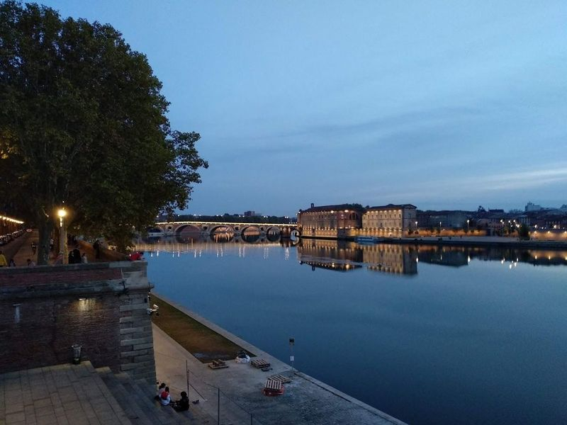
Place Saint-Pierre
Place Saint-Pierre in Toulouse is a hotspot for sports fans, especially rugby enthusiasts. The riverside area is lined with bars where people gather to watch matches. Chez Tonton and Le Filochard are popular spots known for their lively atmosphere and good drinks. The square also features a vintage carousel in front of Square Louise Michel, making it a picturesque location for photos with the Sacre-Coeur in the background.
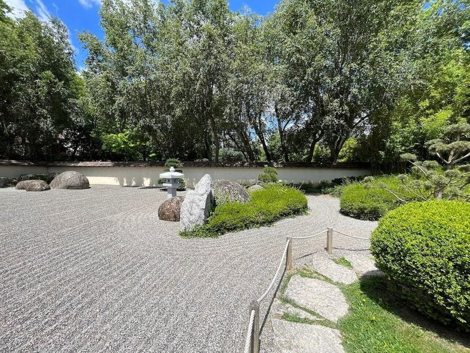
Jardin Japonais Pierre Baudis
Pierre-Baudis Japanese Garden, nestled in the heart of Toulouse, offers a serene escape with its meticulously designed landscape. This tranquil oasis celebrates the bond between Toulouse and Kyoto, featuring traditional elements like a tea pavilion, stone lanterns, and a koi pond. Visitors can wander along winding paths, admiring carefully pruned plants and finding moments of zen amidst the urban bustle.
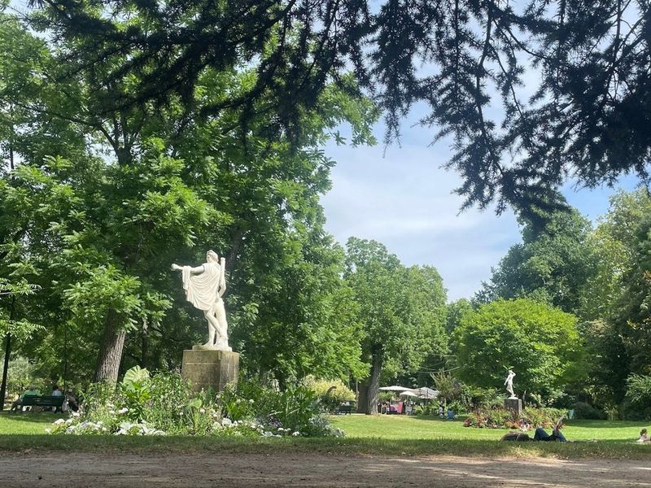
Jardin des Plantes
Jardin des Plantes is a renowned public park and 18th-century botanic garden in Toulouse. It's a popular free attraction offering visitors the chance to enjoy its lush green spaces, captivating water ponds, and medicinal plant collection. The park spans seven hectares and is located near the Canal de Midi, featuring an array of species including Japanese cypresses. Visitors can stroll through pathways adorned with statues and relax by a charming waterfall.